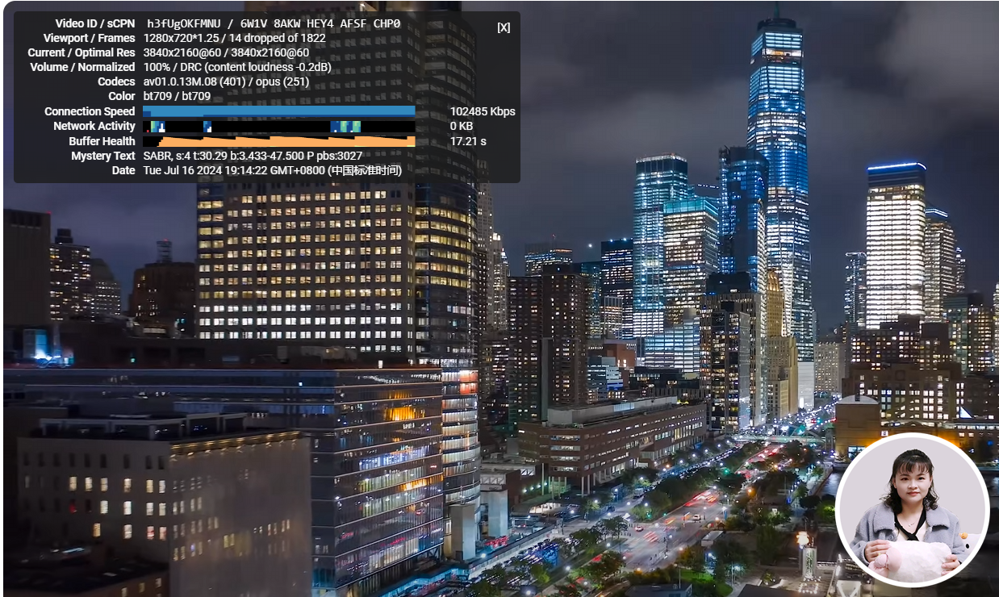
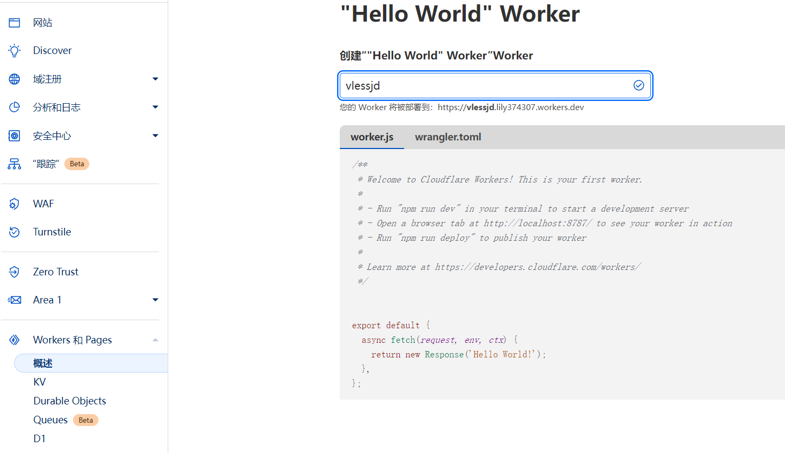
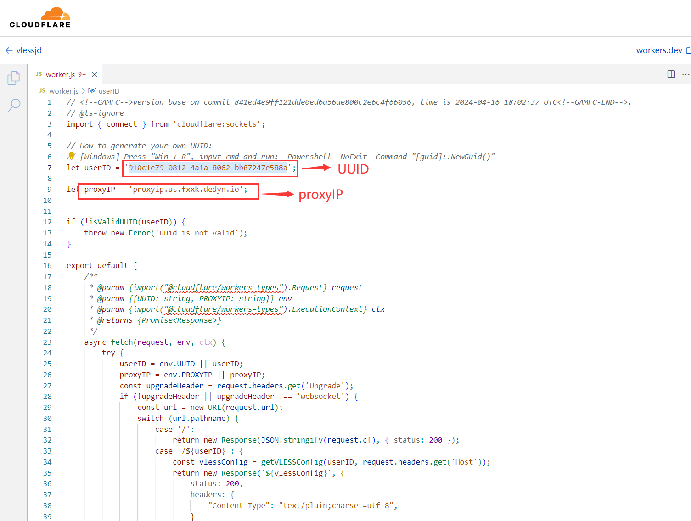
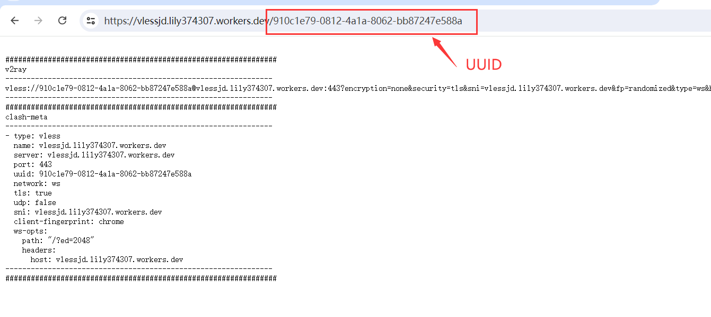
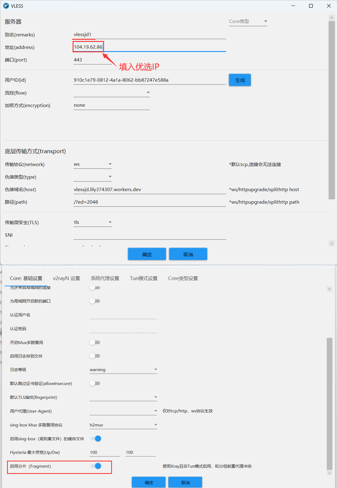
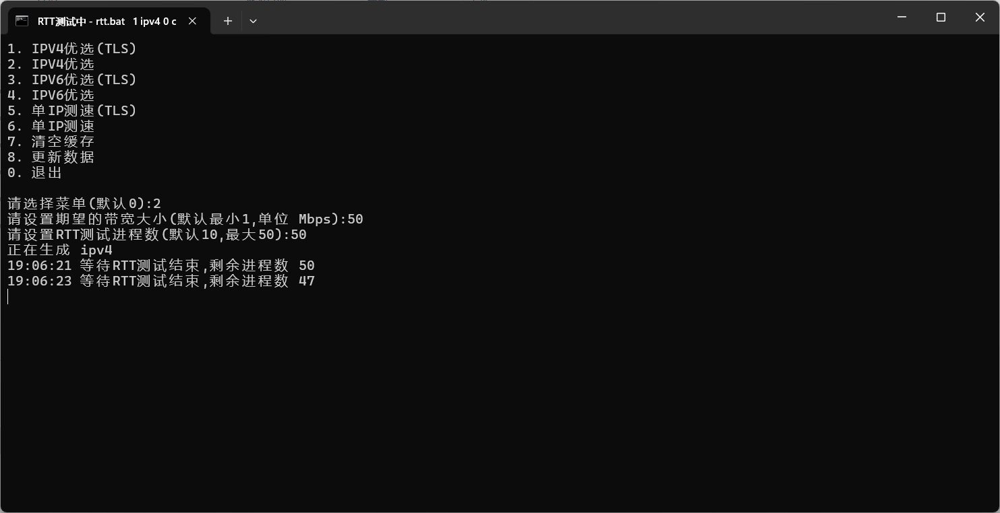
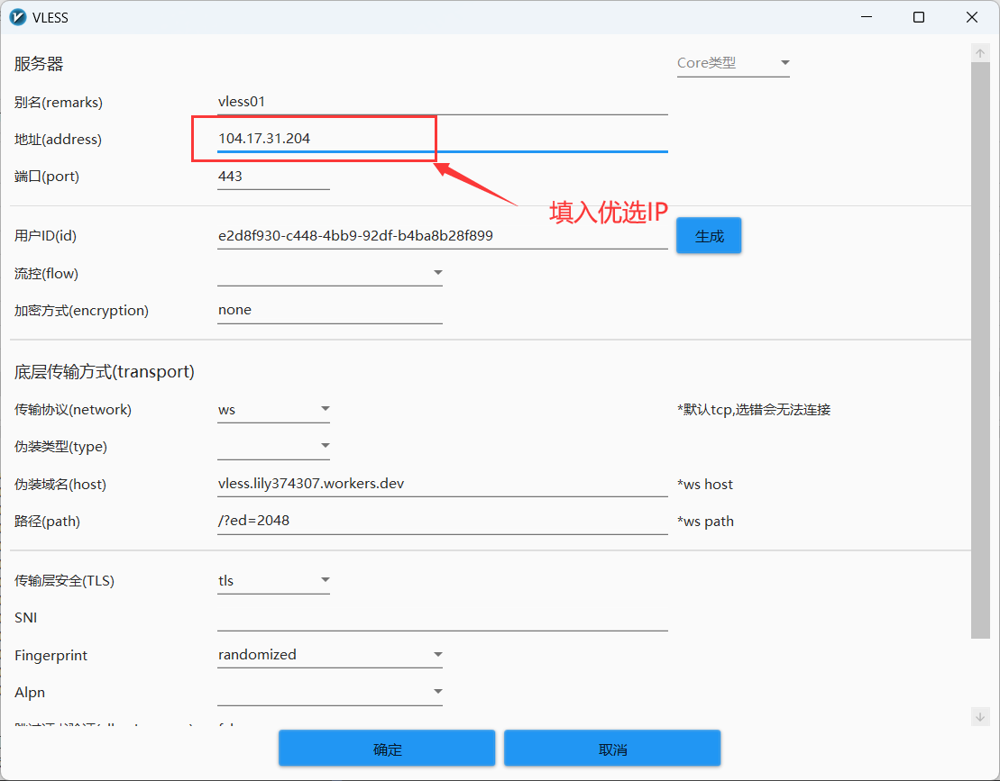

🕓2024年7月18日
视频教程：▶https://youtu.be/PXZbvd5nZaA
本文是通过 zizifn 大佬的一个开源项目 edgetunnel ，使得我们可以免费的在 Cloudflare 上面通过部署 Worker ，来创建一个免费 VLESS 节点！
看看在油管上的速度，优选的IP可以播放4K视频。

准备工作:
注册 Cloudflare 账号
注册地址：点击注册>>
CloudFlare 部署免费节点
原作者 GitHub 源项目地址：点击访问>>
Worker 部署 VLESS
1、来到 Cloudflare 首页，点击 Workers 和 Pages ，创建 Work ，自定义名称，然后部署！

而后，编辑代码，清除原先代码，填入如下代码：
Workers代码：点此查看>>
2、在线生成一个 UUID，用于替换下面代码中第七行的 UUID。（或是用 V2rayN 生成一个）
UUID在线生成：点击进入>>
3、因为原项目里面的代码“ proxy IP ”为空，关于 proxy IP ，是用于转发CF的一些流量，所以，若是存在套了CF的一些网站无法打开，请更换其中的其他网址，也就是第九行中的部分网址！
ProxyIP 可以替换成域名或优选IP
proxyip.us.fxxk.dedyn.io
更多 proxyIP 列表：
CM 维护
proxyip.us.fxxk.dedyn.io
IP落地区域: 美国 维护频率: 12小时/次
proxyip.sg.fxxk.dedyn.io
IP落地区域: 新加坡 维护频率: 12小时/次
proxyip.jp.fxxk.dedyn.io
IP落地区域: 日本 维护频率: 12小时/次
proxyip.hk.fxxk.dedyn.io
IP落地区域: 香港 维护频率: 12小时/次
proxyip.aliyun.fxxk.dedyn.io
IP落地区域: 阿里云 维护频率: 4小时/次
proxyip.oracle.fxxk.dedyn.io
IP落地区域: 甲骨文 维护频率: 4小时/次
proxyip.digitalocean.fxxk.dedyn.io
IP落地区域: 数码海 维护频率: 4小时/次
白嫖哥维护
workers.cloudflare.cyou
Mingyu 维护
my-telegram-is-herocore.onecf.eu.org
sg.ipdb.rr.nu
nl.ipdb.rr.nu
hk.ipdb.rr.nu
jp.ipdb.rr.nu
us.ipdb.rr.nu
小一维护
hk.cf.zhetengsha.eu.org
sg.cf.zhetengsha.eu.org
us.cf.zhetengsha.eu.org
jp.cf.zhetengsha.eu.org
代码修改完毕以后，点击右边的部署 – 保存并部署，然后点击左边的箭头，返回！

4、访问创建的vlessjd，在网站后加上“/UUID” ，即可看到节点信息，当然，里面包含了 订阅链接！

至此，节点部署完毕，复制 VLESS 的订阅链接，粘贴到 V2rayN 里面。
翻墙软件
Windows电脑：v2rayN下载 点击下载>>
安卓：v2rayNG 点击下载>>
iOS/MAC：使用Shadowrocket小火箭
节点设置
添加两个节点，一个是443端口，将节点地址换成优选域名，删除SNI，443端口节点需启用分片；另一个节点端口2082，关闭TLS。

IP 优选工具
CF 优选 IP Windows 工具：点击下载>>
若是速度不理想，可以自行优选 CF IP ，来进行提速！运行 IP 优选的时候，请关闭代理，这样会更准确！记得不要使用 TLS 优选！

把优选的 IP 直接填入到 地址就可以使用了。

解锁流媒体